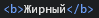

Редактирование и оформление текста
Текст на сайте - один из основных источников информации, и чтобы он был интересен читателю необходимо создавать содержаельный текст, но помимо этого необходимо ещё и красиво оформить текст, для того чтобы его было приятно читать, учесть цвет текста для наиболее лучшей читаемости.
Добавить текст можно и без тэгов но он будет стандартного вида в каком-то непонятном месте и совсем не так как это нужно. По этому создаются обзацы, при помощи тэга .
p - абзац , в данном случае с параметром align - выравнивание (по центу, слева, справа, по ширине), то етсь данный текст можно выровнять так же как и картинки относительно страницы или же других элементов распологающихся на странице.
align= - с помощью данного параметра можно выровнять текст left, right, center, justify - слева, справа, по центру, по щирине.
br - параметр, с помощью которого производится перевод на следующую строку.
hr - горизонтальная линия шириной в один пиксель.
font size="" - размер шрифта со вносимым значением от 1 до 7 (по умолчанию равен 3).
Такие тэги как следующие могут указываться отдельно для каждого слова или хоть для каждой буквы если это требуется, то есть открывается перед словом и закрывается после него .
body text="код цвета" - цвет всего текста.
b - жирный.
u - подчёркнутый.
s - перечёркнутый.
i - курсив.
font color="" - цвет текста.
big - увеличенный шрифт.
small - уменьшенный шрифт.
sub - нижний индекс.
sup - верхний индекс.